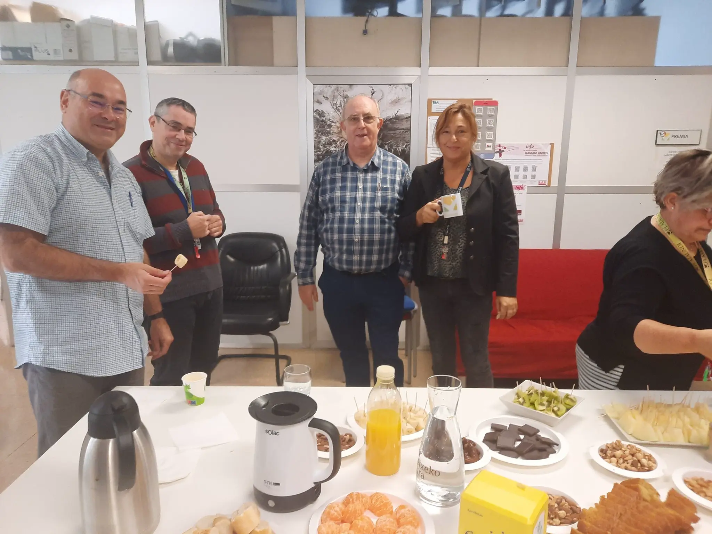
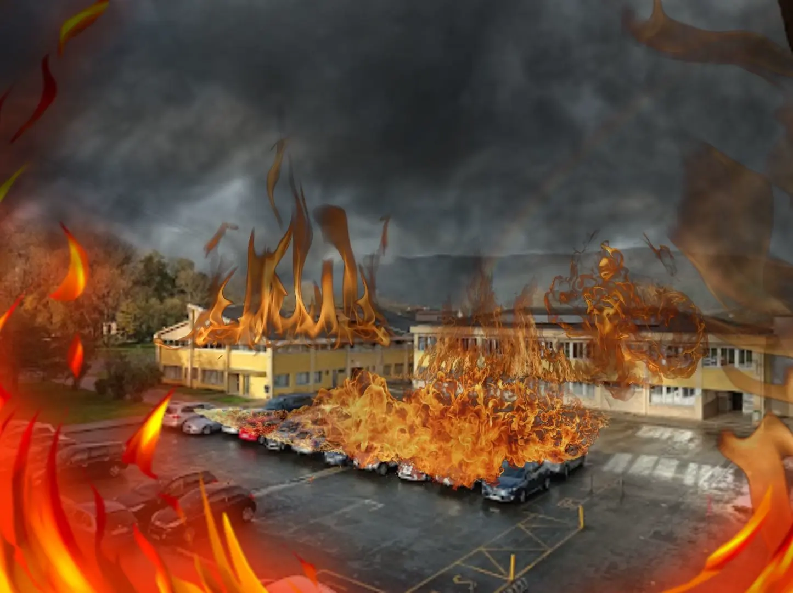
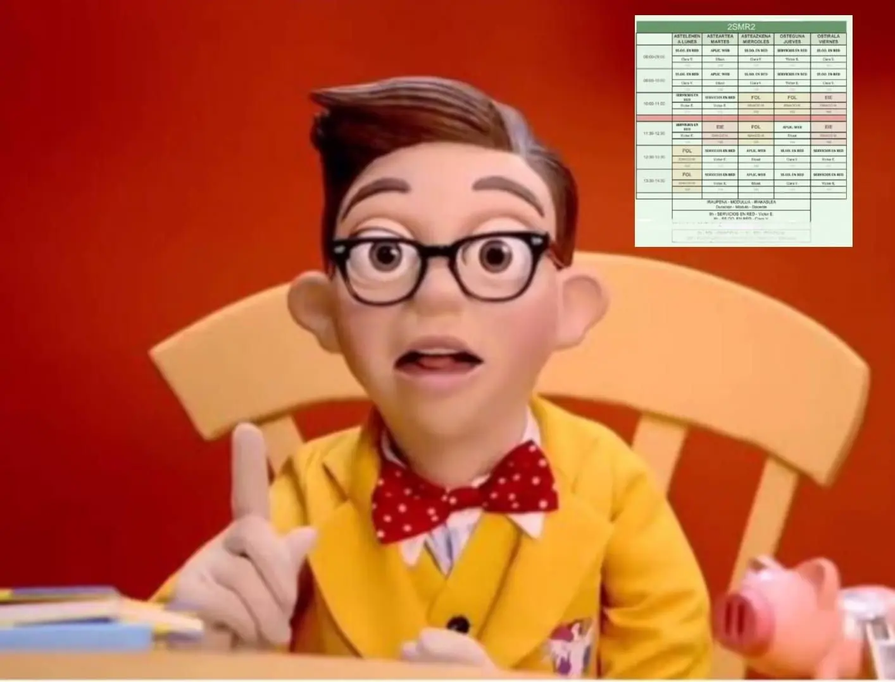
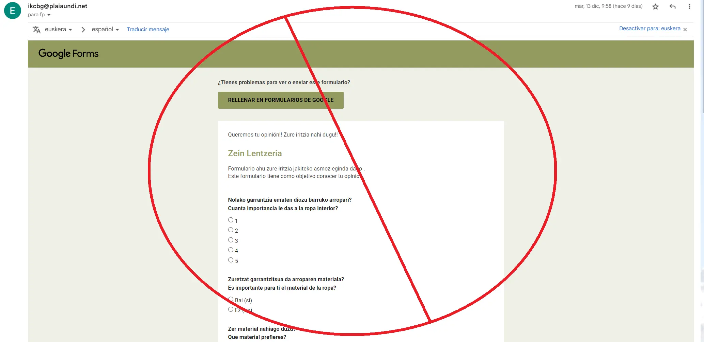

Después de que juanma estuviera en el centro desde 1933, se ha retirado de la escuela rancia en el año 2022.
Profesor de IES Plaiaundi, de la FP de informatica consigue ganar la competición de GAIULLA XTREME PERDIDO - Concurso de la EITB
Habia tocado el timbre de la alarma de incendios y salimos los ultimos, menos mal que estaba puesto el Firewall.
A Fernando le han comido la cabeza
Los alumnos de Plaiaundi estan recibiendo mucho SPAM en forma de formularios. Porfavor parar ya no vamos a contestar a ninguno.
Alumno Lewis Jesus de Nazaret se convierte en Nº 1 de España con mas de 600 horas de juego.